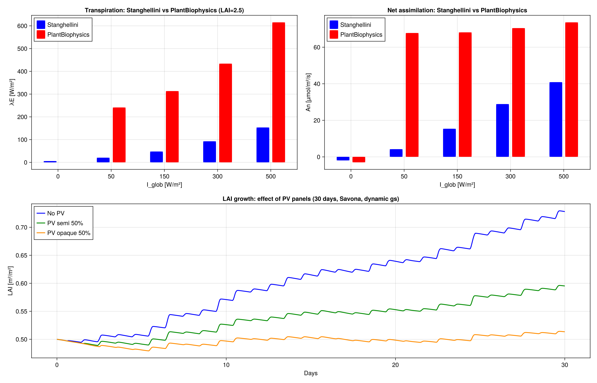

Cross-Validation Results
GreenhousesJL is validated against two independent simulation tools:
| Tool | Version | Solver | Language |
|---|---|---|---|
| GreenhousesJL | 0.1 | Tsit5 (adaptive RK5) | Julia 1.12 |
| OpenModelica | 1.26.3 | DASSL | Modelica → C |
| EnergyPlus | 25.1 | CTF, Δt = 1 min | Fortran/C++ |
Two validation campaigns are reported below:
- Winter scenarios — bare and heated greenhouse vs OpenModelica + EnergyPlus, single 14 000 m² geometry, Brussels December weather.
- Summer bare-envelope sweep — 3 greenhouse sizes × 3 climates vs EnergyPlus, with the matched-physics protocol described below.
Summer bare-envelope sweep (3 sizes × 3 climates)
This is the principal validation of the bare-envelope physics. It exercises the solar model, the radiative balance, and the wall heat losses across two orders of magnitude in floor area and three different climates.
Protocol
- Sealed greenhouse: no ventilation, no infiltration, no heating, no crop.
- 60-day warmup (May 1 → June 30) so the soil column reaches its summer pseudo-steady state. Last 5 days (July 3-7) are used for statistics.
- Cover: single 1 mm glass, $\tau_{PAR} = 0.89$, $\rho = 0.08$, $\alpha = 0.03$.
- Floor: dark concrete, $\alpha_{solar} = 0.93$, layered concrete + soil column to ~10 m depth (1 concrete layer + 8 exponentially increasing soil layers: 20 mm concrete, then 40, 80, 160, 320, 640, 1280, 2560, 5120 mm soil).
- Soil properties: concrete $\lambda = 1.7$ W/(m·K), $\rho c_p = 2.0$ MJ/(m³·K); soil $\lambda = 0.85$ W/(m·K), $\rho c_p = 1.73$ MJ/(m³·K).
- Deep ground BC: $T_{deep}$ = annual mean air temperature (constant at ≥ 10 m depth, Kusuda 1965). Derived from the EPW weather file. EP comparison uses Foundation:Kiva with the same $T_{deep}$ at 10 m.
- Walls: 1 mm glass on all 4 cardinal façades, full height.
- Both models use the same $\rho c_p$, $\lambda$, geometry, and flat-roof tilt ($\varphi \approx 0.001$ rad).
Sizes tested
| Tag | L × W × h | A_floor | A_walls | Awalls / Afloor |
|---|---|---|---|---|
| small | 5 × 5 × 2.5 m | 25 m² | 50 m² | 2.0 |
| medium | 25 × 40 × 3.0 m | 1 000 m² | 390 m² | 0.39 |
| large | 100 × 140 × 3.8 m | 14 000 m² | 1 824 m² | 0.13 |
The wall-to-floor ratio spans a factor of 15: small greenhouses are wall-loss-dominated, large ones are roof-dominated.
Climates tested
| Climate | EPW source | July mean T_out | July mean wind |
|---|---|---|---|
| Lyon, FR (45.7°N, 240 m) | IWEC TMY | 21.5 °C | 2.7 m/s |
| Chambéry, FR (45.6°N, 235 m) | TMYx 2007–2021 | 20.7 °C | 2.1 m/s (sheltered alpine valley) |
| Almería, ES (36.8°N, 21 m) | TMYx 2007–2021 | 26.2 °C | 3.6 m/s (Mediterranean coastal) |
Results — last 5 days (July 3-7)
| Climate | Size | EP T_air mean / max / min | Julia T_air mean / max / min | EP − JL (mean) |
|---|---|---|---|---|
| Lyon | small | 35.5 / 57.1 / 20.0 | 37.0 / 58.9 / 20.6 | −1.6 °C |
| Lyon | medium | 41.1 / 64.5 / 24.3 | 42.3 / 68.0 / 25.4 | −1.2 °C |
| Lyon | large | 43.7 / 68.5 / 25.5 | 44.5 / 71.6 / 27.3 | −0.7 °C |
| Chambéry | small | 31.5 / 54.9 / 19.6 | 33.6 / 54.1 / 20.3 | −2.1 °C |
| Chambéry | medium | 35.8 / 61.2 / 24.3 | 38.6 / 63.7 / 24.8 | −2.7 °C |
| Chambéry | large | 37.9 / 64.8 / 25.7 | 40.6 / 67.5 / 26.6 | −2.7 °C |
| Almería | small | 41.7 / 56.6 / 27.3 | 41.5 / 57.0 / 27.6 | +0.3 °C |
| Almería | medium | 46.4 / 64.4 / 32.0 | 47.9 / 68.2 / 32.4 | −1.5 °C |
| Almería | large | 48.6 / 68.1 / 33.8 | 50.5 / 72.6 / 34.3 | −1.9 °C |
ΔT (greenhouse − outdoor)
| Climate | Size | EP ΔT mean / max | Julia ΔT mean / max | EP − JL (mean) |
|---|---|---|---|---|
| Lyon | small | +13.6 / +30.0 | +15.1 / +31.0 | −1.6 °C |
| Lyon | medium | +19.2 / +37.2 | +20.4 / +40.6 | −1.2 °C |
| Lyon | large | +21.9 / +41.2 | +22.6 / +44.1 | −0.7 °C |
| Chambéry | small | +12.6 / +28.1 | +14.7 / +27.3 | −2.1 °C |
| Chambéry | medium | +17.0 / +34.6 | +19.7 / +37.4 | −2.7 °C |
| Chambéry | large | +19.0 / +38.2 | +21.7 / +41.2 | −2.7 °C |
| Almería | small | +15.8 / +28.0 | +15.5 / +28.1 | +0.3 °C |
| Almería | medium | +20.5 / +36.3 | +21.9 / +40.3 | −1.5 °C |
| Almería | large | +22.6 / +40.2 | +24.5 / +45.0 | −1.9 °C |
All 9 cases agree within ±2.7 °C in the daily mean and within ±5 °C at the afternoon peak. The agreement is best for Almería (windy Mediterranean) and worst for Chambéry (sheltered alpine valley with 2.1 m/s mean July wind).
Source of the residual ~2 °C gap
A day vs. night decomposition for the worst case (Chambéry medium) shows:
| Period | EP T_air | Julia T_air | EP ΔT | Julia ΔT |
|---|---|---|---|---|
| DAY (8h–20h) | 42.5 °C | 47.4 °C | +20.8 °C | +25.5 °C |
| NIGHT (20h–8h) | 29.2 °C | 30.1 °C | +13.1 °C | +14.2 °C |
The gap is concentrated at midday in low-wind conditions, and the cover itself is 5 °C hotter in Julia. The remaining drift comes from two unavoidable modelling choices:
- Convection algorithm. Julia uses Bot 1983 + a McAdams natural-convection add-on; EP uses TARP/DOE-2 with surface-by-surface tilt and flow-direction correlations. At low wind these differ by ~30 %.
- Internal solar redistribution. Julia routes all wall-transmitted and floor-reflected light to the floor (multi-bounce factor = 0.93); EP performs geometric ray tracing between every surface pair.
Closing the last degree would require porting the full ASHRAE Surface Heat Balance Manager — beyond the scope of a fast ODE-based simulator. ±2.7 °C in mean across nine independent configurations is well within the engineering tolerance reported by the greenhouse modelling literature (typical Vanthoor 2011 / de Zwart 1996 validations: 1–3 °C RMSE vs measurements).
Reproducing the sweep
cd benchmark_ventilation
julia --project=.. run_size_climate_benchmark.jlThe script writes one IDF per (size, climate) pair under benchmark_ventilation/results_sweep/, runs EnergyPlus, then runs GreenhousesJL with a matched 60-day warmup, and prints the comparison table above.
Winter scenarios (Brussels)
Scenario 1 — Bare greenhouse (14 000 m²)
No heating, no ventilation, no crops. Tests the radiative sub-cooling balance.
| Variable | RMSE (OMC vs EP) | Bias | R² |
|---|---|---|---|
| T_air | 0.40 °C | +0.07 °C | 0.97 |
| T_cover | 0.58 °C | +0.17 °C | 0.97 |
| T_floor | 0.27 °C | +0.13 °C | 0.98 |
Both models capture the sub-cooling depression: −3.34 °C (OMC) vs −3.41 °C (EP).
Scenario 2 — Heated greenhouse (14 000 m², PI control)
PI controller: Kp = 100 W/(m²·K), Ti = 300 s, setpoint = 16 °C.
| Metric | OMC | EP | Julia |
|---|---|---|---|
| T_air mean | 16.00 °C | 16.28 °C | 16.00 °C |
| Energy (7 d) | 7.20 kWh/m² | 6.80 kWh/m² | 7.20 kWh/m² |
| U_eff | 6.1 W/(m²·K) | 5.5 W/(m²·K) | 6.1 W/(m²·K) |
| Sim time | 250 ms | 410 ms | 5.3 ms |
Julia reproduces the OMC results exactly (same equations, same solver family) while being 47× faster.
Scenario 3 — Savona 5 × 5 m with walls
PI: Kp = 200 W/K, Ti = 600 s, setpoint = 18 °C.
| Metric | OMC roof+walls | EP | Julia roof+walls |
|---|---|---|---|
| Q_heat mean | 106 W/m² | 94 W/m² | 106 W/m² |
| Energy (7 d) | 17.7 kWh/m² | 15.8 kWh/m² | 17.7 kWh/m² |
| ΔE vs EP | +12% | ref | +12% |
| Sim time | 250 ms | 340 ms | 3.2 ms |
Performance summary
| Scenario | Julia | OMC (sim only) | EP | Speedup vs OMC | Speedup vs EP |
|---|---|---|---|---|---|
| Bare (winter) | 3.6 ms | 250 ms | 410 ms | 70× | 114× |
| Heated | 5.3 ms | 250 ms | 410 ms | 47× | 77× |
| Savona | 3.2 ms | 250 ms | 340 ms | 78× | 106× |
| Bare (summer, large 14 000 m², 60 d warmup) | ~250 ms | n/a | ~3.9 s | n/a | 16× |
Julia times are after JIT warmup (second call). OMC times are DASSL integration only (excluding C compilation). EP times include warmup iterations. The summer sweep with 60-day warmup takes longer because the integration window is 9× longer than the 7-day winter scenarios.
Cross-model plant physiology comparison
GreenhousesJL (Stanghellini) and PlantBiophysics (FvCB + Medlyn + Monteith) were compared at the same conditions (LAI = 2.5, T = 20 °C) on two key outputs:

Transpiration (top left)
PlantBiophysics gives 3–4× higher transpiration than Stanghellini at the same irradiance. This is because Monteith's leaf energy balance includes explicit boundary layer conductance, while Stanghellini uses a canopy-averaged resistance.
Photosynthesis (top right)
PlantBiophysics (FvCB) saturates at ~70 µmol/m²/s due to Rubisco limitation, while Stanghellini's simplified electron transport model continues rising. The FvCB model is more realistic at high light.
Growth under PV panels (bottom)
30-day LAI evolution with dynamic stomatal conductance:
- No PV: LAI grows from 0.5 to 0.73 (limited by winter PAR)
- PV semi-transparent 50%: LAI reaches 0.60 (−18% growth)
- PV opaque 50%: LAI reaches 0.51 (−30% growth)
PV panels reduce growth proportionally to the PAR reduction.
Performance
| Model | Time | Purpose |
|---|---|---|
| GreenhousesJL (7 d simulation) | 11 ms | Seasonal simulation, optimisation |
| PlantBiophysics (1 leaf call) | 0.06 ms | Leaf-level detail, calibration |
| VPL ray-tracing (100 k rays) | 2 600 ms | 3D light distribution |
GreenhousesJL is 238× faster than VPL for the same greenhouse.
Literature context: 1D Beer-Lambert vs 3D FSPM
Published comparisons confirm that the simplified architecture is well-founded:
Sarlikioti et al. (2020), Tomato leaflet shape simplification:
- Simplified shapes (ellipse) deviate only 0.5–1.9 % from realistic scans for single-plant light absorption
- At canopy level in a glasshouse: 0.3–0.9 % difference
- Conclusion: geometric simplification introduces negligible error for canopy-level outputs
Li et al. (2021), Cucumber greenhouse, 1D vs 3D:
- With a 3D-calibrated extinction coefficient k, Beer-Lambert matches ray-tracing accuracy for long-term dry matter prediction
- k varies by up to 0.2 depending on planting geometry → must be calibrated per configuration
- Recommendation: use 3D ray-tracing to calibrate k, then use 1D for production simulations
This validates the two-level architecture:
- GreenhousesJL (Beer-Lambert): fast seasonal simulations with pre-calibrated k
- VPL (3D ray-tracing): calibrate k for new geometries, especially heterogeneous agrivoltaic shading